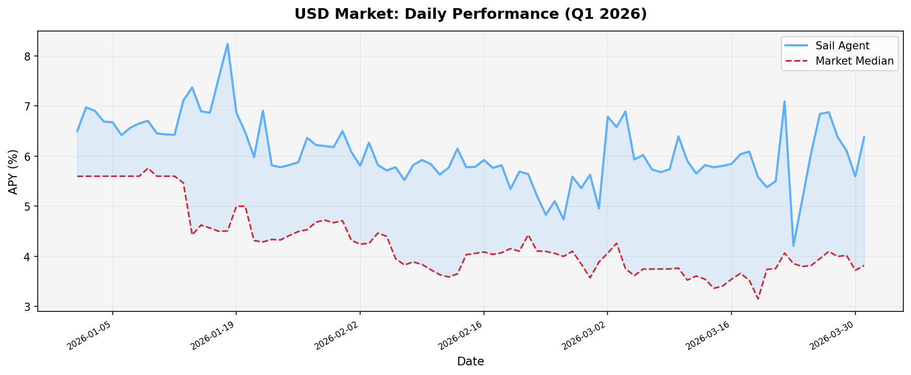
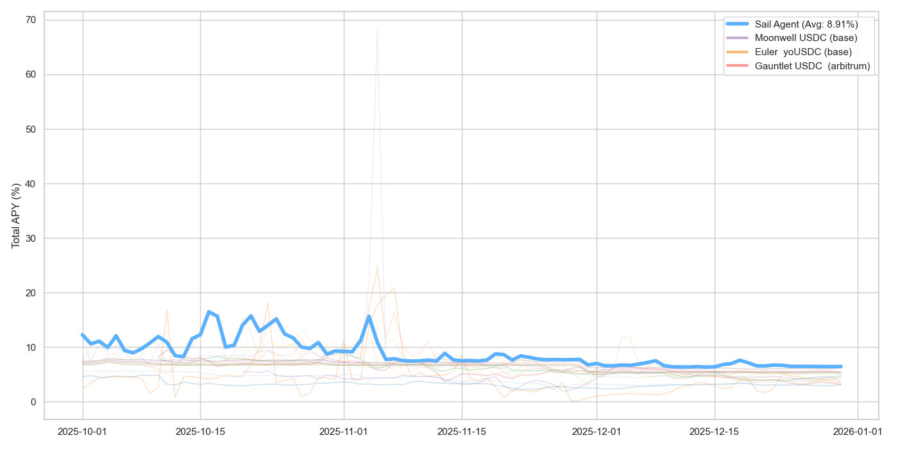
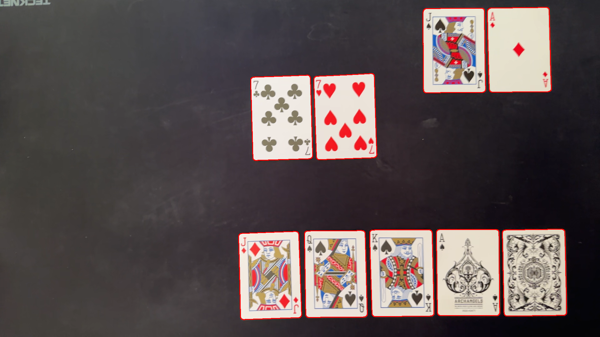
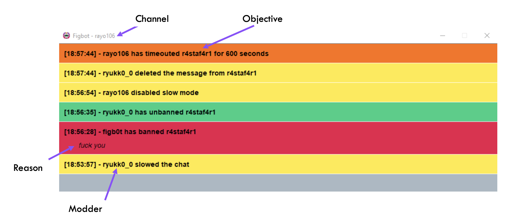
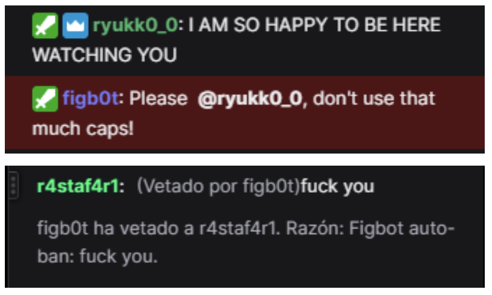

DeFi cuantitativo · monitorización de riesgo · optimización de yield cross-chain
Madrid, España · abierto a remoto / UE
~$650M
rutados en 6 meses
~200
usuarios
~$600k
TVL
2 + 2
papers · informes
Sail · Lead Engineer, Capa de Inteligencia · Nov 2024 – actualidad
Fundé la capa de inteligencia en Sail — un protocolo DeFi de optimización de yield sobre Base y Arbitrum — desde cero. Dos sistemas en producción, ambos diseñados e implementados de extremo a extremo: el motor de optimización cross-chain que decide dónde se asigna el capital de los usuarios, y Sonar, el sistema de monitorización de riesgo que decide qué evitar. También definí el esquema de la base de datos y construí las primeras interfaces de usuario.
Liderazgo. Presenté la capa de inteligencia a inversores en rondas de financiación, defendí la narrativa técnica del motor y de Sonar en esas conversaciones y lideré con el CEO las discusiones de roadmap sobre dirección y trade-offs.
Motor de optimización cross-chain
Formulé la asignación de cartera como un proceso de decisión de Markov restringido. Función objetivo no convexa (yield, coste de transacción, slippage, riesgo de concentración) optimizada mediante simulated annealing con aceptación Metropolis-Hastings. Un meta-controlador CNN predice los hiperparámetros del annealing a partir del histórico APY/TVL, reduciendo la búsqueda en 3-5×.
Aceptación Metropolis-Hastings
P(aceptar) = min(1, exp(−ΔE / T)) donde T sigue el cooling schedule predicho por el meta-controlador.
El marco matemático completo — formulación, demostraciones y validación empírica — está documentado en dos artículos de investigación públicos de los que soy autor.
Sonar — monitorización de riesgo
Detección de anomalías por z-score sobre baselines APY multi-horizonte (1d / 7d / 30d), scoring dual SPIKE / TREND (80/20 vs 40/60), ciclos de ejecución por tiers (1h / 2h / 6h) y un mecanismo de inercia financiera que redujo el churn innecesario de cartera en un 43 %.
Score de anomalía
zh(t) = (APY(t) − μh) / σh para h ∈ {1d, 7d, 30d}
Aciertos defensivos · Q1 2026
Sonar suspendió la exposición de los usuarios antes de dos exploits confirmados públicamente — la detección fue previa a la confirmación pública en ambos casos:
· Exploit del oráculo de Moonwell
$1,78M de deuda incobrable, 181 prestatarios afectados. Sonar detectó comportamiento anómalo del oráculo en los mercados de Moonwell sobre Base y suspendió la exposición antes de que la magnitud del exploit se confirmara públicamente.
· Exploit de Resolv Protocol
~$80M de USR acuñados desde una clave AWS KMS comprometida, ~$25M de ETH extraídos, USR de-pegueado a $0,003. Sonar detectó actividad de minteo no validado y suspendió las posiciones expuestas a Resolv antes de que el de-peg fuera públicamente visible.
Rendimiento en producción
Todas las cifras son netas de gas, comisiones de bridge, slippage y comisiones de protocolo.
trimestre
APY medio
vs. mejor estática
vs. Letras del Tesoro
alcance
Q4 2025
8,91 %
+5,43 %
+123,87 %
20 fuentes, USDC + USDT
Q1 2026
6,06 %
—
+44,3 %
32 fuentes, USDC + USDT, +EURC

Q1 2026 — APY diaria: agente Sail vs. mediana del mercado. Área sombreada = outperformance.

Q4 2025 — Sail frente a las 20 fuentes de mercado activas, APY diaria.
optcg — tracker de inversiónPython · SQLite · TUI Textual · ~6,8k LOC · 2026github ↗
Tracker CLI + TUI de cartera para One Piece TCG (cartas, productos sellados y graduadas). Scraping en vivo de precios desde CardMarket y eBay con un pipeline de cookies con soporte Cloudflare que descifra cookies de Chrome / Arc / Brave / Edge en macOS y Windows usando el keychain de cada plataforma. Dashboard HTML offline autocontenido, sincronización con iCloud, P&L por ítem y gestión de recibos.
Poker VisionPython · PyTorch · OpenCV · 2023github ↗
Sistema de visión computacional en tres módulos: adquisición de imagen con eliminación de ruido, reconocimiento de cartas mediante CNN basada en VGG16 y simulador de Montecarlo del equity. Alta precisión de reconocimiento y simulación realista para dos jugadores. Documentado en una publicación universitaria.

Figbot — bot de moderación en TwitchJava · Sistema multi-agente · 2022github ↗
Sistema multi-agente que asiste a streamers con la moderación del chat. Baneo basado en blacklist, análisis del ratio de lenguaje inapropiado para timeouts e interfaz para que streamer y mods revisen las decisiones automatizadas.


Diseño de Centro de Procesamiento de DatosProyecto de investigación · UPM · 2022 · Matrícula de Honor
Proyecto en grupo: diseño completo de un CPD para una plataforma de edición de vídeo online — distribución de racks, planos eléctricos, refrigeración y flujos de aire. Matrícula de Honor.
Compilador para subset de JavaScriptJava · 2021 · Matrícula de Honorgithub ↗
Compilador para un subconjunto de JavaScript. Analizadores léxico, sintáctico y semántico; tabla de símbolos; recuperación de errores y avisos. Matrícula de Honor.
Otros proyectos
Ecomobility — Web Semántica · estaciones de bici y puntos de carga de Madrid publicados como RDF (OpenRefine, RML) · otoño 2022
Reactify — React + API de Spotify · invierno 2022
Broker de Sistemas Distribuidos — broker pub/sub en C, suscripciones persistentes · invierno 2021/22
Middleware de Detección de Fraude Bancario — Java JMS, middleware concurrente · invierno 2021/22
Shell propia — C / Bash; lexer, parser, pipelines multi-proceso · invierno 2021
Sokoban — Java MVC con persistencia XML · primavera 2022
Filtro Blanco y Negro — Assembly MC88110 · invierno 2020/21
Formación
Universidad Politécnica de Madrid · 2018 – 2023
Grado en Ingeniería Informática · Nota media 8,56 / 10. Matrículas de Honor en Sistemas Operativos, Procesadores de Lenguajes, Web Semántica y Grafos de Conocimiento, Art of Programming, Prolog, Programming Project, Proyecto Centro de Procesamiento de Datos.
Materias: Algoritmos y Estructuras de Datos · IA · Machine Learning · Sistemas Distribuidos · Middleware · Concurrencia · Probabilidad y Estadística · Redes de Computadores · Seguridad · Algorítmica Numérica · Competitive Programming · Computación Cuántica.